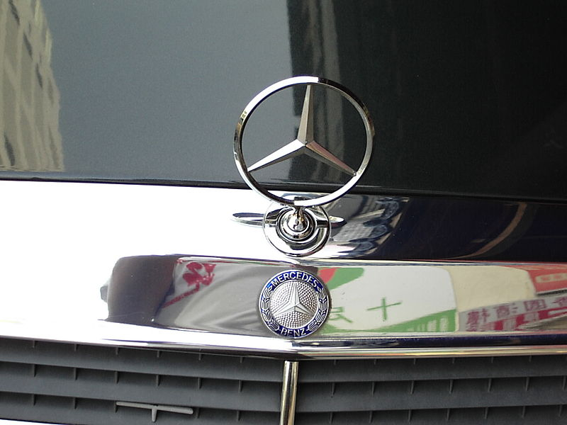

Historien

Mercedes-Benz (eller bara Mercedes) är ett tyskt fabrikat på personbilar, bussar och lastbilar som tillverkasinom koncernen Daimler AG där man även har ansvaret för Maybach och Smart. Mercedes-Benz har sitthuvudkontor i Stuttgart, Tyskland. Daimler-Benz skapades 28 juni 1926 genom sammanslagningen av Benz & Cie och Daimler-Motoren-Gesselschaft med Mercedes-Benz som varumärke.
Från säsongen 2010 kommer Mercedes-Benz att tävla med ett eget stall i VM i formel 1, då företaget har tagit över Brawn GP. Stallets namn blir Mercedes Grand Prix.
Namnet Mercedes kommer av dottern till Emil Jellinek, en österrikisk affärsman som år 1900 beställde 36 fordon från Daimler-Motoren-Gesselschaft. Under 1900-talet utvecklades Mercedes-Benz till att bli ett av de mest prestigefyllda bilmärkena i världen. Företaget är därtill världsledande inom lastbilsindustrin.
1926 slog sig Benz & Cie.och Daimler-Motoren-Gesselschaftsamman och bildade Mercedes-Benz. Detta var en följd av den ekonomiska kris som drabbade den tyska industrin i början av 1920-talet. Det nya företaget drog nytta av kraftsamlingen och utvecklades till ett av Europas stora prestigemärken och gjorde sig känt inte minst på Europas racingbanor. Mercedes-Benz blev statusbilen jämte Maybach.
En specialversion med terrängdäck användes av Adolf Hitler. Man tillverkade också flera stora tvåsitsiga cabriolet-modeller. Silverpilarna (tyska Silberpfeile) kallas de racingbilar som Mercedes-Benz och Auto Union körde i motorsport 1934-1939 och Mercedes-Benz 1954-1955.
Wilhelm Friedle införde under sin tid på Mercedes-Benz löpande bandet i den tyska fordonsindustrin.
1950-talet: Återuppbyggnad och comeback på racerbanorna
Efter Andra världskriget byggdes företaget upp på nytt och efter att först tillverkat förkrigsmodeller kom nya moderna modeller som snabbt tog tillbaka företaget till de fina salongerna och till försäljningsframgångar. Man intresserade sig samtidigt för andra områden inte minst genom Unimog. Mercedes-Benz inledde på nytt en karriär som den statsmannamässiga bilen framför andra när modellen “Adenauer” lanserades. När Gerhard Schröder 1998 valde Audi som tjänstebil var det första gången som en tysk regeringschef valde bort Mercedes. Schröders val kom då han under sin tid som regeringschef i delstaten Niedersachsen satt med i Volkswagens styrelse.
1954 vann Silverpilen - Mercedes-Benz klassiska racerbil - på Europas racingarenor och drog glans över företaget. Detsamma gjorde Måsvingen som är en av företagets mest klassiska modeller och varumärkesskapare, Mercedes-Benz köpte patentet till denna bils klassiska dörrar av Hans Trippel. Under 1950-talet kom en rad klassiska modeller – limousiner och sportbilar - som idag är eftertraktade samlarobjekt.
1960-talet: Maktkamp i den tyska bilindustrin
Under 1960-talet förändrades stora delar av den tyska bilindustrin där flera märken gick i graven och andra fick nytt liv. Mercedes-Benz försökte ta över BMW men övertagandet avvisades i sista stund vid en bolagsstämma hos BMW. 1963 tog man över Borgwards fabriksanläggning i Bremen och i slutet av 1960-talet tog man över Hanomag. 1965 valde man att sälja DKW (Audi) till Volkswagen.
Bilmodellerna gick från det tidiga 60-talets fenmercor – inspirerade av de amerikanska dollargrinen – till det sena 60-talets så kallade tvålkoppsdesign med betydligt kantigare linjer med ett tydligt exempel i den så kallade “strich-acht”.
1970-talet: Experimentbilar och nya modeller
Mercedes-Benz experimenterade med Wankel-tekniken och byggde flera idag klassiska konceptbilar som aldrig kom i produktion. Man skapade bland annat en sen efterträdare till 1950-talets måsvinge. I slutet av 1970-talet började man tillverka kombi-modeller vilka tidigare gjorts av externa karosseritillverkare under modellnamnet Safari eller Universal. 1979 kom Mercedes-Benz G-klass (Geländewagen) som fortfarandetillverkas för olika arméer (däribland den svenska) och för privatpersoner.
1980-talet: Den första kompaktmodellen
I och med lanseringen av kompaktmodellen 190 – dagens C-klass – 1982 tog företaget ett första steg till nya influenser kontra företagets klassiska limousiner och stora sedaner.
1990-talet: Sammanslagning och en rad nya modeller
Under 1990-talet startade ett utvecklingsarbete där Mercedes-Benz började gå mot fler modeller och i flera segment. Ett första steg som var revolutionerade för Mercedes var lanseringen av Mercedes-Benz A-klasssom var företagets första bil i småbilsklassen. Man har även lanserat en ännu mindre modell genom dotterbolaget Smart. Utvecklingen har fortsatt där man lanserade en SUV-modell i och med lanseringen av M-klass och 2005 lanserade man B-klass.
1998 slogs sig Mercedes moderbolag Daimler-Benz samman med amerikanska Chrysler Corporation och bildade DaimlerChrysler vilket skapade nya förutsättningar för Mercedes med en rad andra modeller inomkoncernen. I dagens koncern ingår Mercedes-Benz i Mercedes Car Group och har ansvar för märkena Smart och Maybach.
Mercedes-Benz idag
Under senare år har Mercedes-Benz haft problem med kvaliteten och dess driftsäkerhet. Rostskador var ett stort problem på E-klassen från 1995 till 2000 när man bytte till miljövänlig lack. Även på senare modeller finns dessa problem i mindre omfattning.
Tillbaka till artiklar